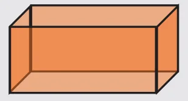
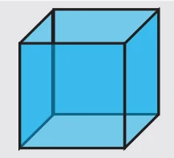
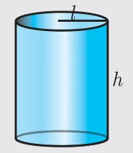
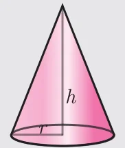
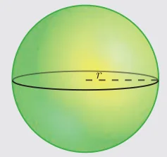
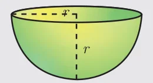
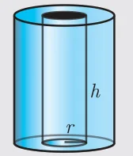
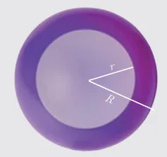
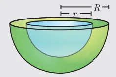
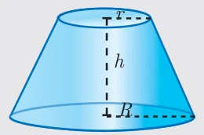

| Solid | Figure | Curved surface Area / Lateral surface Area (in sq. units) | Total surface Area (in sq. units) | Volume (in cubic units) |
|---|---|---|---|---|
| Cuboid |  | \(2h(l + b)\) | \(2(lb + bh + lh)\) | \(l \times b \times h\) |
| Cube |  | \(4a^2\) | \(6a^2\) | \(a^3\) |
| Right Circular Cylinder |  | \(2\pi rh\) | \(2\pi r(h + r)\) | \(\pi r^2 h\) |
| Right Circular Cone |  | \(\pi rl\) \(l = \sqrt{r^2 + h^2}\) \(l =\) slant height | \(\pi rl + \pi r^2\) \(= \pi r(l + r)\) | \(\frac{1}{3}\pi r^2 h\) |
| Sphere |  | \(4\pi r^2\) | \(4\pi r^2\) | \(\frac{4}{3}\pi r^3\) |
| Hemisphere |  | \(2\pi r^2\) | \(3\pi r^2\) | \(\frac{2}{3}\pi r^3\) |
| Hollow cylinder |  | \(2\pi(R + r)h\) | \(2\pi(R + r)(R - r + h)\) | \(\pi(R^2 - r^2)h\) |
| Hollow sphere |  | \(4\pi R^2 =\) outer surface area | \(4\pi(R^2 + r^2)\) | \(\frac{4}{3}\pi(R^3 - r^3)\) |
| Hollow hemisphere |  | \(2\pi(R^2 + r^2)\) | \(\pi(3R^2 + r^2)\) | \(\frac{2}{3}\pi(R^3 - r^3)\) |
| Frustum of right circular cone |  | \(\pi(R + r)l\) where \(l = \sqrt{h^2 + (R - r)^2}\) | \(\pi(R + r)l + \pi R^2 + \pi r^2\) | \(\frac{1}{3}\pi h[R^2 + r^2 + Rr]\) |